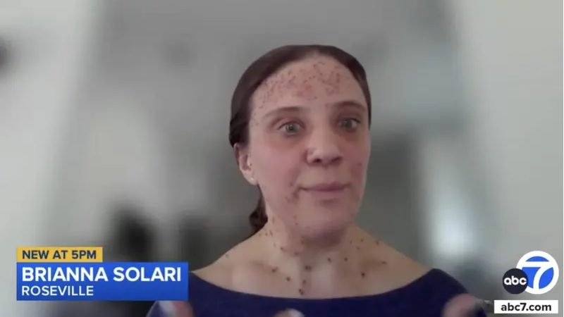

加州一名罹患罕见遗传病的女乘客8月1日在布班克机场（Burbank Airport）登机时，因外表遭西南航空（Southwest Airlines）工作人员质疑健康状况，被要求下机，引发争议。事主索拉里（Brianna Solari）最终在等候近5小时后才获准搭乘另一航班。

罕见病患者索拉里登机前遭西南航空质疑健康状况，被迫下机等候近5小时并提供医生证明，最终获安排另一航班。（abc7电视台）
据悉，索拉里患有神经纤维瘤病（Neurofibromatosis，简称NF），这是一种会导致非癌性肿瘤在神经系统和皮肤上生长的遗传性疾病。她也透露，搭机前一天刚在洛杉矶接受手术，以减少体内肿瘤。索拉里表示，由于缺乏一种可作为肿瘤抑制剂的蛋白质，她全身会长出大小不一的肿瘤，「可能小如针尖，也可能巨大到严重毁容」。事发当日，她戴上头带遮住额头，并戴上口罩，以免自己的外表令人不适。
岂料在起飞前，一名机组人员走近并询问她是否患有任何疾病，甚至怀疑是水痘。索拉里解释自己刚做完手术，并提出可出示出院文件，但对方拒绝查看，要求她接受紧急医疗服务（EMS）检查，并将她带离登机口。索拉里指出，她其后既未获安排与医生对话，亦未接受EMS检查。最后，她被迫联络外科医生索取一封证明适合飞行的信函，转交机组人员。经过漫长等待，她才获安排乘搭约5小时后的另一班机。索拉里气愤表示，这次经历令她感到丢脸和尴尬，「我觉得受到了侵犯，因为这涉及我个人的医疗状况」。
西南航空事后虽发表声明回应，对给客户带来的不便致以最深切歉意；并承认，尽管最终获得客户的旅行许可，但未能在航班起飞前及时完成相关程序。
根据联邦法规，航空承运人不得拒绝、延误运输或要求乘客提供医疗证明，除非确定乘客的状况构成直接威胁。然而，西南航空处理本次事件的做法引起社会各界关注，质疑航空公司对罕见病患者的处理方式是否恰当。